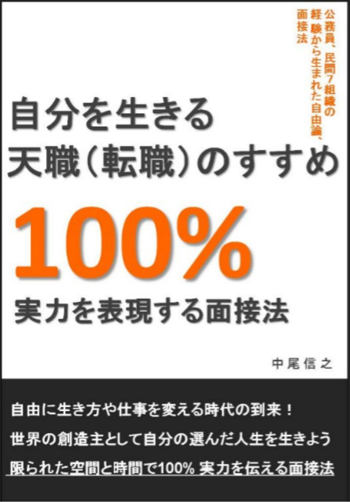
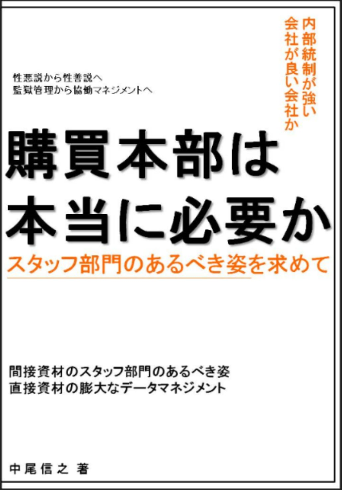
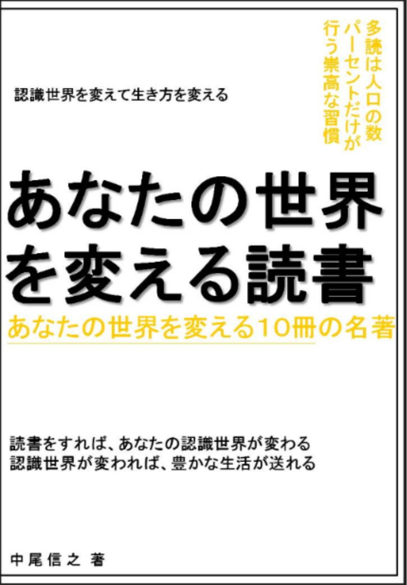
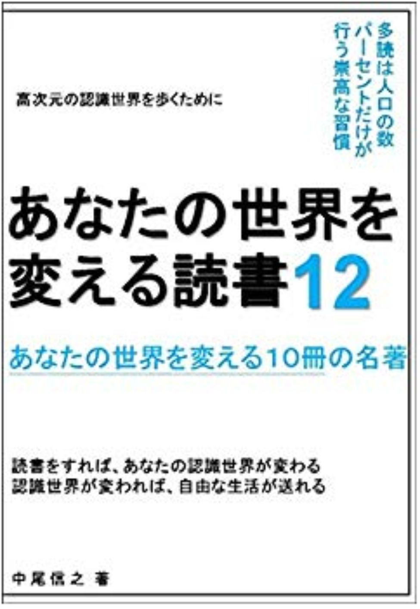
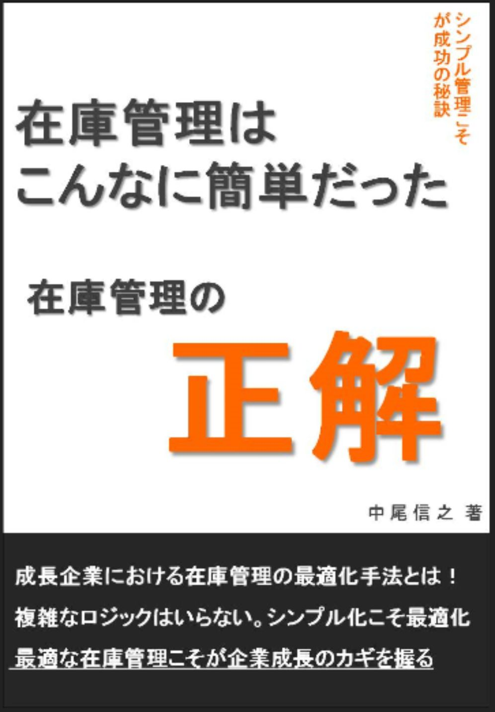
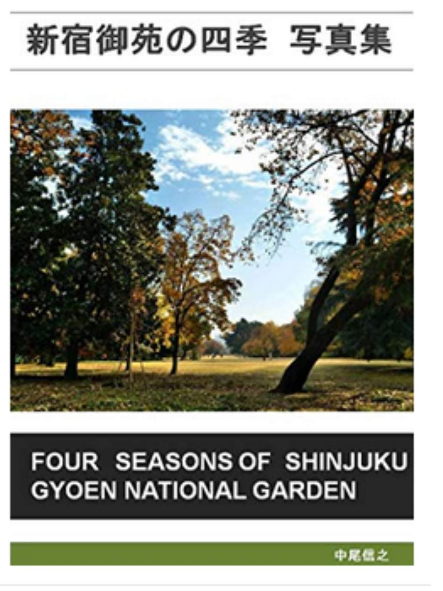

| あなたの世界を変える読書７ あなたの世界を変える１０冊の名著 あなたの世界を変える読書 あなたの世界を変える１０冊の名著 | |
| 中尾信之 | |
| (2018) | |
あなたの世界を変える読書７
あなたの世界を変える１０冊の名著
□はじめに
・ハイパー・シナジー・スパイラルを発動しよう
□第一章 生き方のヒントをくれる本
１．あのお店はなぜ消耗戦を抜け出せたのか
ネット時代の老舗に学ぶ「戦わないマーケティング」 仲山進也
２．お金２．０ 新しい経済のルールと生き方 佐藤航陽
３．ＮＯ．２理論 最も大切な成功法則 西田文朗
４．勝ち組企業の「ビジネスモデル」大全
大前研一 ビジネス・ブレークスルー大学総合研究所
□第二章 世界のとらえ方を変える本
５．潜在能力を最高レベルに引き出す
「変性意識入門・催眠編」 苫米地英人
６．現代思想のパフォーマンス 難波江和英、 内田樹
７．大国の掟 佐藤優
８．愛のキャラバン 宮台真司 他
□第三章 科学によって見方を変える本
９．名医は虫歯を削らない
虫歯も歯周病も「自然治癒力」で治す方法 小峰一雄
１０．生き物上陸大作戦 中村桂子 板橋涼子
□おわりに
・超新常識の世界を創造しよう
あなたの世界を変える読書７
あなたの世界を変える１０冊の名著
□はじめに
・ハイパー・シナジー・スパイラルを発動しよう
本シリーズは、キンドル読み放題書籍の中から、私が面白いと思った本を紹介させて頂いているシリーズである。今回で７冊目となるシリーズである。
私は、昔から本を読む際に、ひとつの本を読み切ってから次の本に取りかかるという読み方をしておらず、同時にいくつかの本を並行的に読んでいくようにしている。ある本を２０ページ読んで、次の本を２０ページ読んで、また次の本を４０ページ読むなど、その時々の気分にあわせて、読みたい本を、集中力の続く範囲で、切り替えながら読み進めている。最近は、フィクションの本を長らく読んでいないが、フィクションの本を読んでいるころも、そのような読み方をしていた。
最近の読書において考えてみると、あっという間に読んでしまった本もあれば、少し難しいと感じながらも読み進めたものもある。また、少し読んで、この本は読む必要がないと判断したものも多い。そのような読み方をしていると、やはり、読書は、一冊ごとの単独での魅力にとどまらず、ここまで紹介してきた６０冊の書籍で得た考え方や知識があってこそ、理解ができる内容や、理解が深まる内容があることを知り、頭の中で、知識のネットワークがつながっていることに気づかされることがある。
この効用を何度か強調してきたが、このことは、まるでシナジー効果が私たちの頭の中で、積み重なっているようなものであるから、ハイパー・シナジー・スパイラルとでも呼ぶことができるのではないかと考えるようになった。
一冊の本のある部分を読んだだけでは、本の全体像が分かっていないために、読んでいる部分について、的確に理解することが難しい場合がある。なぜなら、全体像が見えてこそ、その部分の位置づけが初めて分かることがあるからである。
例えていうなれば、長いトレッキングコースを歩いていて、くねくねと道が曲がっているところを進んでいるとする。そして、やっと高台に上って、自分がどのような道を通ってきたが分かる。そこで初めて、「あのポイントは、ああいうところにあったのか」、というふうに、トレッキングコース全体の中で、どういう位置にあり、どういう意味があったのかということが分かるのである。読書においても同じように、一冊読み終わって、やっと分かることがあるのである。だからこそ、同じ本を複数回、読むことが、ゲシュタルト構築には必要だとも言われるのである。
ところが、すでに多くの本を読んだ知識が蓄積されていたり、並行的に多くの本を読んでいる場合、あたかも、すでに、現在手にしている本を読んだことがあるように、類似の本で得た知識が、目の前の本の理解を手助けしてくれることがある。「ああ、あの本でも、確かこんなことが書かれていたな」、であるとか、「あの本で言っていたことを、別の言葉で表現すると、こうなるのかな」という風に、シナジー効果が出てくるのである。これが、どんどんつながれば、スパイラルとなって、いろいろなことの理解につながっていくのではないだろうか。これが今までも強調してきた多読による知のネットワーク化であり、プラスのシナジーである。
私たちは、このような知のシナジーを感じながら、読書を楽しむことができる人種なのである。ぜひ、ともに、読書の旅を楽しんでみようではありませんか。
今回も、本書を手にして頂き、本当にありがとうございます。
私が、本シリーズで紹介した時点では、読み放題対象だった書籍が、その後、読み放題ではなくなっているものも出てきていますが、その点はご容赦を頂きたく思っています。そのような書籍については、私の推薦文を読むことで要点部分をご理解頂くか、興味を持たれた場合は、ご購入頂くか、その作者の他の読み放題書籍を手にとって頂ければと考えています。その点、ご了承頂きたく、よろしくお願いいたします。
□第一章 生き方のヒントをくれる本
１． あのお店はなぜ消耗戦を抜け出せたのか
ネット時代の老舗に学ぶ「戦わないマーケティング」 仲山進也
この本は、楽天に出店しているお店の方々の販売をお手伝いする仕事をしておられる仲山さんが書かれた本である。表紙に、可愛らしい絵がかかれており、個人出店者の方向けの本なのかと思って手にとったが、ここに書かれている内容は、中規模の企業や、大企業の部門の方々にも参考になる考え方であると感じた。一般のＥコマースに関する本に書かれていることと、反対の取り組みを推奨している点、その理由を細かく書かれている点が、非常に参考になる一冊である。
私自身も、ミスミ、アマゾンに所属したこともあり、また、自分自身もネット販売で商品を購入することが多かった時期もあり、本書で指摘していることがグサッとくる部分があった。たとえば、多くの商品をそろえ、ネット検索にかかりやすいような手段を取り、価格を安くして、納期を短くして、やれることを全てやって競合との戦いを日々繰り返していく。
これによって満足するお客様も生まれる。しかし、この道は、「究極の自動販売機」の道であると筆者は指摘する。これに対するのが、ネットで販売していても、お客様ひとりひとりと向き合いエンターテイメント性を持って幸せを増やしていく、「究極の対面販売」の道があるという。このどちらの道も、社会には必要とされているサービスであると私は思う。
しかし、販売をする側にとっても、どこで買っても同じものを、販売するのと、お客様の幸せにつながる物語を加味して販売するのとでは、満足度が大きく異なってくるという指摘がなされている。これは、本当に現在を生きる意味で意義深い指摘である。
規模の追求をして数字的に組織の売り上げが大きくなっても、もろ手をあげて成長とよべずに、単なる膨張にすぎないこともあるという。「究極の自動販売機」を突き進む企業同士の戦いは激しく、社員も疲弊する。この道は、明らかに体力のある大企業のみが歩める道なのである。これと同じ土俵で小さな組織が戦うことは無意味であるから、規模の大きくない企業は、この土俵で戦わないという意思決定をすることが現実的なのであろう。
仮にどこでも買える同じ商品を販売する場合でも、例えば、楽天で、常に価格が一番安い企業は常時入れ替わるから、常時２位を保つことを大切にしている店舗もあるという。一番安い価格は、赤字で出店時だけ意図的に安売りしているだけであり継続ができない価格ということである。安ければ安いだけいいというのではなく、物にもよるが、その価格に継続性があるということが、お客様と店舗との信頼関係につながるのである。
本書で紹介されている「レモン部」というレモンの苗木を育てるコミュニティを作っている植物を販売する企業の例も非常に面白い。また、お酒を販売する企業の例でも、もはや物を販売しているのではなく、物語を含めてサービス提供をしているということなのである。
以前から、私も自身の書籍の中で、組織中で、人を「さん」付けで呼んだり、対外的入力「お客様」という呼び方や、「仕入先様」という呼び方に配慮することの重要性を指摘してきたが、仲山さんも、その点を指摘している。「究極の自動販売機」を目指している企業にとっては、ひとりひとりのお客様の顔を見ずに、ターゲットと呼んだりする。
しかし、「究極の対面販売」を目指す企業にとっては、「お客様」という呼び方や、個別の○○様という呼び方になり、人と人の顔が見えた関係が成り立つのである。だからこそ、「究極の自動販売機」を目指している企業でさえも、「究極の対面販売」的な側面を考えていくことに意味があるのだろうと思われるのである。
本書の中で、大企業の一営業所が、ネット販売にトライする話が紹介されているが、これもまた非常に参考になる事例であった。通常の大企業は、既存の商流のシガラミから新しい挑戦をすることができないことが多い。しかし、一部署が、全体的な承認がなくても、一部の役員の承認で事を進めて、既成事実化し、そのうえで実績を作り、新しい商品開発の道を作るというのは、大企業内のベンチャー的な取り組みとして、参考になる事例であった。
本書は、決して小さな企業に対してのみ有効なことを語っているのではなく、規模がある組織にもヒントを与えてくれるものである。
また、働き方、生き方に対するヒントも含んでいる書籍であり、非常にお勧めの一冊である。
２．お金２．０ 新しい経済のルールと生き方 佐藤航陽
題名が、あまりに世間受けが良さそうな題名で、中身はどうかなと、思って手にしたが、非常に深く、抽象度の高い思考をしていながら、それを誰にでも分かるように記載している素晴らしい本であった。
単純にお金がどういうものであるかということを、現在の視点で見ているだけではなく、お金の歴史も踏まえたうえで、それが社会全体にとって、人間全体にとってどういう役割を果たしてきたか、どういう点が機能不全に陥っているかということを分析している。そのうえで、これからのお金の役割を考察している点が、非常に評価のできる一冊である。
価値判断としては、実体経済が規模として１とすると、実体経済を離れたお金がお金を生む経済が９としたうえで、実体経済を離れた部分が大きくなりすぎた問題も指摘されている。また、筆者は、私と同じファミコン世代であると思うが、デジタルネイティブや、それ以降の世代は、生まれたころからある所与の世界が我々世代とは違うことから、それらの世代が切り開く未来を、彼は非常に明るくとらえている。
だから、テクノロジーの変化によって、人間が生きるための労働から解放され、お金を必死に稼ぐことからも解放されると予測し、その先の人間のありようを豊かに想像しようとしている。
実際、我々世代は、生まれたころから、ある程度の物質的な豊かさに恵まれ、物質的な欲求や、金銭的な欲求がドライブになりにくい世代であり、それ以外の承認欲求などが強い世代であるように思われる。この本でも出てくるのは、そういう欲求の変化とテクノロジーの変化によって、相対的にお金（国家が発行する紙幣）の価値が下がっていくということが指摘されている。昭和初期世代に比べて、我々世代は、お金にそこまで執着しない世代であり、実際にお金の価値は、すでに下がっているのではないかという側面もある。そして、さらにお金の価値を下げていくトリガーとしては、ベーシックインカムの制度が取り上げられている。今はベーシックインカム制度がなく、生存権が確立されておらず、生活の基盤が揺らいでいるため、お金に執着せざるを得ない、お金にとらわれている状態に我々以降の世代も陥っているように思える。
テクノロジーは本質的には人間を自由にしていく側面があるが、しかし、社会全体として、その恩恵を行きわたらせるには、そのための制度がいるように私は思う。ベーシックインカムについては、本書では言葉が何度か出てくるだけであるが、テクノロジーの進化の恩恵を一部の人間の特権にとどめるか、仕組みとして多くの人を労働から解放し、ベーシックインカムを大々的に導入することで、生活の安定まで含めた制度として組み込むかは、可能かどうかという問題とは別に、政策的に導入しようという社会的合意が成り立つことと、現在の為政者層が、そういう方向になることで、自分たちの利権が減るかもしれないことを許容するかという問題がある。よって、この本が、楽観的にとらえている未来の前提には、いくつかの大きな政策的な変更を、市民が主権者として促すというハードルがあるのではないだろうか。
なぜかというと、苫米地さんが指摘するように、何十年か前から人類の食料生産力は全体が飢えない水準を超えているのにも関わらず、飢餓状態や、制度的貧困にある人口が増加しているからである。テクノロジーの進化イコール人類、個々の平等的な富の配分ということは別問題であることが分かる。
佐藤さんの本では、読み放題対象ではないが、苫米地さんの「２０５０年 衝撃の未来予想」で書かれた予想と近しい予想もされている。 国家の発行しているお金の価値が下がるということは、国家そのもの価値も変容するということである。 変わって考えられるのは、企業が国家的な役割を果たすこと。エストニアのように非常に国境にとらわれない先端の国家概念を構築していくこと。そして、個人や共同体が国家的な役割を果たしていくことである。
佐藤さんの指摘で面白いのが、現在の経済体制そのものが、あるタイミングで、一気に別のものになる必要はないということである。そうではなくて、新しい経済の在り方を、個々人や組織が自由に発想し、実施していくことができてくれば、仕組みのとしての経済がいくつも存在しえるということである。そうなってくれば、我々個人が、その中の、どれを利用していこうかということを選択できる機会が増えるという指摘である。
現在の資本主義の制度的欠陥があるのは、多くの人が認めていることであり、アンチテーゼとしての共産主義が存在しなくなった今、資本主義自体が正しくあろうとする力学も薄れ、さらにお金を自己目的化した増殖のみに走り、制度的には破綻しているという指摘も多い。
これに依存した国家体制もまた、同じように欠陥を内包している。このような中で、誰かをスケープゴートにして気休めをするのではなく、この欠陥に向き合って、いろいろな経済の仕組みを個々人が想像し、実験することで前向きに、社会の仕組みを変えていこうとする、そのような意思を共有することができる本である。題名に「お金」という言葉があるからといって、現在のお金のありようを肯定しているものではない。２．０とは、既存の価値の否定をし、新たな価値主義の社会を作ろうという、そういう意味があるのである。
３．ＮＯ．２理論 最も大切な成功法則 西田文朗
冒頭の３割程度を読むだけで充分な作品であるかもしれないが、テーマとしては、面白いテーマを扱った本である。よくよく考えると、組織はチームで行われるのであるから、ナンバー２の重要性は当たり前なはずであるが、私たちは、ふだん、その重要性を忘れがちであるように思う。
ベンチャーキャピタルが素晴らしいビジネスアイデアを持った人間に対して、資金面だけではなく、人材面でも協力する場合があるのは、そのためである。
企業を成長させるためには、アイデアをビジネスとして実現する設計を行い、組織を効率的に動かして、内外の体制を整えていく必要があり、それには経験値の高い経営のプロが必要となるのである。素晴らしいアイデアと、隙のないオペレーションが、両輪となることが、重要な成長のファクターということである。
ということは、トップひとりだけの力で、組織を成長させていくことが難しいことを良く理解して、イエスマンではない優秀なナンバー２を雇い入れ、権限を与えるという判断を行い、また、優秀なマネジメントチームを作っていくことに思いがいたることが、トップの重要な才能や、見識といえるのではないだろうか。
そして、優秀なナンバー２を仲間にできれば、トップと自分（ナンバー２）だけでは、組織が成長できないことを知っているから、さらにマネジメントチームの人員強化に心をくだいていくのではないだろうか。
そういう意味で、この本が言おうとしていることは、至極当たり前のことである。しかし、日々の実務に埋没していると、我々は、そのことは忘れがちである。組織の箱の在り方を論じることと同時に、人的体制の在り方として、個別部門ごとに見るのではなく、広く全体を見通せる視野を持った人間が、組織全体の整合性を見ていく必要があるということである。
そして、ここで言うナンバー２が、必ずしも、副社長や、常務などといったポジションにあることが必須ではなく、そのような影響力を行使できる力を持っていることが大切であると、本書は指摘している。
４．勝ち組企業の「ビジネスモデル」大全
大前研一 ビジネス・ブレークスルー大学総合研究所
この「あなたの世界を変える読書」シリーズの第一弾の冒頭で、私と読書との関係を紹介させて頂いているが、その中で、私が大学を卒業してから、最初に公務員になる前に大前さんの「平成維新」に出会い、その本との出会いがあって、働きながらインターネット留学をした後に、ワーキングホリデーを経て、ビジネススクールに編入し、それも残り一学期を残して退学して、東京に来た経緯を記載した。
今は、あまり大前さんの本を読むことはないが、二十代の前半で、毎日、ビジネス・ブレークスルーの放送を浴びるように見ていたため、そのころ吸収したことが、今も私の思考原理になっているように思われる。もちろん、公務員をやめて、オーストラリアから帰って、民間企業に入ったばかりの私は、吸収したことを、実践の域に高めることができずに、空回りをしていたろうし、今でもできていないことが多々ある。いろいろなことで悩んでしまったりしている。それでも、その時に得た知識が、時々、思い出され、助けになっているのも事実である。
ビジネス・ブレークスルーのコンテンツで得られる知識というのは、大前さんという個人の知識だけではなく、多くのコンサルタントの方々や、経営者の方々のたくさんの言葉に触れることができるので、これもまた、ビジネスに関する知識の集合体ということができるものである。この情報に四六時中浸かっていると、まるで、そこで語られる出来事を、一緒に体験したかのように、話に引き込まれたりすることもあった。その時の私は、きっと変性意識状態になり、語られる情報世界に臨場感を感じていたのだろうと思う。そして、今も私の記憶に情報としてインプットされているのである。このコンテンツは大前さんが死んでも、社会の財産として、ビジネ・スブレークスルー社で放送し続けて頂きたいものである。
今回紹介する本は、いくつかの実際の事例をまとめた本であるが、もっとも参考になったのは、冒頭の部分である。これも当たり前のことであるが、「いったい自分たちの組織が何をする組織なのか」、「何のために存在しているか」というコア部分を、もう一度しっかりと見つめなおすべきだという指摘がある。そして、それを実現するための手法を考える際は、過去のしがらみにとらわれずに、あらゆる手をゼロベースで検討するようにという強いアドバイスがある。この自分たちが何をなすべきかという根本問題、これは、今回、１冊目に紹介した本での指摘と同じである。究極の自動販売機を目指すべきか、究極の対面販売を目指すべきか、そこで提供する価値は何か。何をすると、自分たちも楽しめ、お客様にも喜んで頂けるか。競合と同じことをしていても、仕方がないのである。
過去の成功体験がしがらみになって、環境が変わった世界で、新しいルールを作れない状態に陥るのではなく、自分たちが、そのようなルールを作っていくべきだというのである。そう考えると、現状の組織が小さいことは失うべきことが小さいことであり、縛るものが少ないということである。また、成長の余白があるということである。
逆に、組織が大きいということは、しがらみが多いということである。そうすると、この弊害を乗り越えるためには、大きな組織の中で、好き勝手に動ける小さな部隊を作るか、外部の機動的な才能とコラボレーションするか、社外に自由に動ける子会社を作るかという実験の種を、どんどん撒いていくべきなのだと思われる。例にあげられている、サイバーエージェントの新人が子会社の社長になるということは、実際、５０歳以上で、頭の固い人間が社長になるよりも、現時点においても、将来の発展を考えても、非常に現実的な手段なのではないかと思う。今の私たちには、もう一度、自分を、そして自分たちの組織を見つめなおすことが大切なのである。
□第二章 世界のとらえ方を変える本
５．潜在能力を最高レベルに引き出す
「変性意識入門・催眠編」 苫米地英人
この本は、タイトルからも分かる通り、かなり変わった内容の本である。しかし、今まで、苫米地さんの本は、超瞑想法や、洗脳術に関する本を紹介してきたので、すでに私たちの中には、この本の内容を受け入れやすい素地ができていると思われる。
火事場のバカ力は、緊急時に脳のリミッターがはずれて発揮される力であるが、そのような場面ではなくても、訓練しだいで変性意識状態になることで潜在能力を発揮できるというのが、本書の内容である。しかし、なぜリミッターがあるかというと、体が壊れないためであったり、脳に入ってくる情報量が多すぎても脳が処理しきれないためであり、むやみやたらにリミッターがはずれているのが良いとも言い切れないからである。
ただ、集中力を高めるということだけでも、自己催眠を行うことで変性意識を作っている状態であるという。また、単に過去の出来事を思い出すこと、考え事をすること、映像を見て、現実よりも映像に臨場感を感じたり、音楽や小説の世界に臨場感を感じること、ただそれだけで人間は変性意識状態になっているのだという。また、最強の変性意識状態は睡眠であるという。要は、起きている状態で、この変性意識状態を意識的に作れるようにしておくことで、自分の力を最大限に発揮して、よりより人生を生きようということである。そのためには、変性意識状態を作るのが、難しくないという認識にたって練習をする必要があるということである。
面白いのは、催眠術と気功は、気を利用して、変性意識に働きかけ、認識している情報のコントロールをしているという点では、同じものであると指摘されていることである。また、催眠術について、催眠術師が催眠術をかけているのではなく、受ける側が自分で自己催眠をしているのだというのも興味深い。
催眠術師は、受ける側が、自己催眠をしやすいように、リラックスをさせ、変性意識状態に誘導していくのだという。そして、受ける側が、変性意識に誘導がされやすいように、催眠術師側も変性意識状態になっているのだという。少し言い換えると、催眠術師側が、変性意識状態になり、鏡に映すように、受ける側も変性意識状態になり、そうして、受ける側が自己催眠しやすい状態にしていっているということなのだと思われる。これは、人間が、そのような仕組みでできているからであって、小さい頃の子供が親の言葉を素直に受け止める状態に似ているという。
苫米地さんの他の本でも指摘がされていたが、東大生や官僚などは、受験勉強の際に、自己催眠をして集中して勉強をしていた経験があるから、催眠術にかかりやすいという。つまりは、物理的な目の前のこと以外に、臨場感を感じやすいということである。だからこそ、オーム真理教の高学歴者が吸い寄せられたともいえるのである。
また、催眠術師にも、いろいろな型があるとのことで、本書で登場されている催眠術師の方々のタイプとしては、言語型、芸術などのイメージを操るタイプ、武術（身体的）に近いタイプと、その人ごとの型があって、それぞれに催眠術をかけやすいタイプも異なるのだという。
この本の中でも紹介されている分かりやすい例が、お医者様が、患者さんがショックを受けるような言い方で、体が悪いということを言葉で植え付けるようなことがないように、言葉の選び方に配慮しなければいけないということである。
また、もう一つの例としては、雨が降った日に、「雨だから嫌」だと、朝思うか、「恵みの雨」と思うか、それだけで自分の一日の行動が変わってくるという例も示されている。私たちも、ひどい台風の日は別として、通常の雨は程度であれば、「恵みの雨」として、前向きにとらえて、その日、一日を自分のものとして過ごしたいものである。小さな子供は雨が降ると、自分の好きな傘を持って、楽しそうに外に出ていくものである。雨が嫌なものと、定義をしていないからであろう。
これらの例からも分かるように、このことを拡張して考えれば、本の締めくくりとして書かれている、以下の言葉になるといえそうである。
「自分の能力の限界は自分のイマジネーションの限界です」
この言葉が示すように、私たちは、いつでも、自分で自分の限界を、設定してしまっているのではないだろうか。そのことに気づけば、私たちが、その壁を自分で取り払うことが可能となり、より良い人生を送ることにつなげられそうである。ぜひ、前向きに生きていたいものである。
６．現代思想のパフォーマンス 難波江和英、 内田樹
この本は少し理屈ぽい内容を書かれている面もあるが、一般の哲学に関する本よりも読みやすく、また考えるヒントになる基礎知識も多いので紹介をさせて頂きたい。過去、２００冊ほど苫米地さんの本を読んできた私にとっても、ここで紹介されている基本的な内容は、改めて理解しておく方が、その他の知識の理解を深めるのではないかとも感じた。
私たちは、自分たち生きている世界の見方や、考え方について、それがすべて、あたりまえの普通のこととして受け入れて生活をしている。もちろん、そうしないと、ひとつひとつのことを真剣に考え直していては、精神を病んでしまった哲学者たちのように、思考の迷路にとらわれて、器用に日常生活をしにくいという側面もある。しかし、当たり前と思っていることを、ひとつひとつ意識にあげて考えることで、自分たちの考え方を変容させていくことができるのも、また事実である。このシリーズは、そういうことを意図して、第七弾まで進めてきたのであるから、本書は、その流れにあっている作品といえる。
たとえば、役者さんは、自分がどのように歩いているか、どのように話しているかということを意識して、役割を演じる時は、普段の自分と違う歩き方や、話し方をしようと試みる。しかし、役者ではない普通の人は、普段、どのように自分が歩いているか、背中が曲がって歩いているか、どのように息をしているかということを意識にあげず、無意識にゆだねている。しかし、一部の人は、歩いているときに、背筋を伸ばして歩こうと意識して、姿勢を正したり、場面、場面で、話し方を意図的にコントロールしたり、はたまた、自分の呼吸のペースを意図的に調整している。
これと同じように、本書で語られている言葉というものの成り立ちや、いろいろな思想家の考え方を知り、ちょっと意識してみるとういのは、自分の言葉に対するとらえ方を変え、自分の話し方を変えたり、単語の選び方を変えたりというふうに実践的なことにつなげられる面がある。
また、フーコーが権力について語っていることを解説してくれているように、私たちが、権力というものをどのようにとらえて、その力の影響をうけ、もしくは影響を受けているように感じて過ごしているかという考えを知れば、過剰に、その力に縛られずに生活をすることができるのではないかと思われる。
例えば、東京には非効率な踏切があり交通を分断しているが、踏切の前で、車は一旦停止をしないといけないことになっている。しかし、踏切が下りておらず、見通しがいい場所で、一旦停止を常にしなくてはいけないのは、おかしくはないだろうか。逆に危険なようにも思われる。常に一旦停止をしないといけないのであれば、踏切は何のためにあるのだろうか。そして、さらに、踏切の横で警察官がわざわざ待機しているのは何のためであろうか。安全を確保するために踏み切りという装置がおかれているのに、常に一旦停止をしないといけないという決まりをしき、そのうえで警察官がこっそり、もしくは意図的に待機している。それを、当たり前の風景として日々見ているが、これは滑稽な風景でしかない。
フーコーがベンサムの考えた一望監視施設の構造から、権力というものの人への影響を示したように、キージーは精神病院という管理システムを例にとり、現在社会が、それらの構造のように監視体制という権力構造を生み出していることを暗示しているという。
その精神病院のような監視体制の中においては、 監視されている患者だけが機械的な存在になるのではなく、監視している側もまた機械のように規定された行動をするようになっていくという。 この文脈を読んで、ぞっとしながらアニメの「攻殻機動隊 S.A.C. SOLID STATE SOCIET Y 」を思い出した。
この物語では、ある国会議員がみなし子を国家施設で引き取り、子供たちにエリート教育を施しているつもりであった。しかし、実は、ある官僚がみなし子ではなく、虐待されている子供たちを親から誘拐して、親には子供がいなかった記憶を受け付け、子供からは家族の記憶を奪い、家族のいない老人たちに子供を預ける仕組みを組み立てていたのである。
少子化が進行しているにも関わらず、家庭で子供たちが大切にされていないという逆説的な状況があり、また、世代をつむいできた老人が家族と離れてくらしている状態があり、そして、物語の中の監視社会では、乱暴な親が子供を育てるより、システムとして、子供たちを守り、育てる方が、安全で、子供のためにもなるという判断をしたという設定になっているのである。このことは物語の中の話であるが、前提条件としては、現実の世界に非常に近い状態のように思われる。だからこそ、ぞっとするのである。
監視社会化が進めば、権力全体を見通して歪んでいるところがないか、バランスを欠いているかを市民がチェックできなくなる。そして、より一層の監視社会化が、知らず知らずのうちに進んでいくことにつながるのかもしれない。そのような時、誰かが意図的に、前述の物語のようなシステムを組み込むことも考えられる。皮肉なのは、それが悪いか良いか、子供たちの視点から考えた時には、判断が難しいことである。子供は、ひとりの権利主体であり、親の付属物ではない。親は子供の権利を、子供が未成年者の間は、代理をするものではあるが、子供の権利を奪うことはできないのである。
監視社会化が進む中で、私たちは、当たり前とされていることが没個性、従順で機械的人間の製造、工場のように折り目正しい社会規範の蔓延など、おかしなことにつながっていく風潮にないか、常に市民が主権者としてチェックをしていく必要がある。
これは、止観（止まって観る）という行為を社会に対して行っていくことであり、同時に、自分たちが常識を疑うことを、時々は行っていくということであるように思われる。
７．大国の掟 佐藤優
前回の第六弾で、初めて佐藤優さんの書籍を紹介させて頂いた。今回も、引き続いて佐藤さんの書籍を紹介したい。私たちは、小学校から大学に至るまで、長年歴史をそれなりに習い、毎日のようにニュースなどでも世界の情報にふれている。しかし、表層の情報には触れることができもて、より深いレベルで、より巨視的な視点で、過去からの大きな流れや、人類の思想の潮流といったレベルでの理解となると、ほとんど理解できていないのが現状である。そこで、歴史的、地政学的な理解を深める意味で、本書を読むことは意味があるものと思われる。
シーパワーであるイギリスもアメリカも、かつて孤立主義をとっていた時代があり、またこの両国は現在、孤立主義的な行動をとりつつあるという。中国は、海洋進出という意味では、シーパワーであり、アジアで存在を誇示しようとしているが、しかし、いくつかの理由から、シーパワーとしては力を発揮できないと佐藤さんは指摘する。実際に海軍としては、長らく戦争をしておらず実戦経験がなく、装備計画の戦略も未熟で海軍力が非常に低いためであるという。また、ウイグル地方が不安定化していく中で、陸での問題をかかえ海に集中できないことも推測として指摘されている。それでも、いくつかのシナリオがある中で、共産党体制というものが温存される可能性が高いことを、他の方の書籍を例にとりながら指摘している。
またＥＵというものに、私たちは、なんとなく明るいイメージを持っているが、これは第二次大戦中にドイツが第三帝国という形で力を強めたように、あたかも第四帝国というような意味合いで、ドイツ中心の勢力という見方ができると同時に、ほっておくと戦争の火種になりやすいドイツを封じ込めるという意味合いの二つの側面があるという。ギリシアやスペインの危機に対して、ドイツは頑張って支援をしているのだろうという見方を、日本の報道ではしてしまいがちであるが、実際は、ドイツが内需ではなく、ＥＵ内部の輸出によって成り立っているがために、仕方のないことであるという。
日本は、経済の中で輸出が１０％だけであるが、ドイツは４０％を占める。自分たちが作ったものをＥＵの他の国が購入してくれないと、今のドイツの発展は成り立たないというのである。逆に、日本は円安にして輸出が得をするという見方が、誤っているのがこれでも分かる。円高にして、安いもの仕入れる方が、ずっと良いのに、未だに何十年も前の見方で、一部の輸出産業の視点での報道が続けられているのである。また、ギリシアについては、戦後、ロシアと、欧州の協定で作られた国であり、欧州としては、あえてギリシアを発展させず、観光の農業だけの国にして、共産革命が及ばないようにしてきた歴史があるという。だからこそ、欧州はギリシアに対する負担を、自分たちの共同責任として、負わないといけないらしい。
ロシアは自分たちの安全を担保するために、ロシア周辺には緩衝地帯を設けたいのだという。緩衝地帯とは、完全にロシアとして取り込んではいないが、必要に応じて自軍を動かすことができるエリアを言う。緩衝地帯があるからこそ、冷戦中も一度も、ロシア機が、ＮＡＴＯに撃墜されるということが発生しなかったらしい。
前回、紹介した佐藤さんの書籍で、私たちの世界は第一次世界大戦から繋がっていて、決して第二次大戦後に新しく生まれ変わった世界ではないことを共通認識にした。ギリシアやトルコや、中東各国、ロシア、クリミアなどの状態は、第一次大戦の当時からの流れに直結しており、宗教的な問題もからめると、より古くからの歴史の流れの上に、現在の問題が存在しているのが分かる。
「世界史の極意」と「大国の掟」で世界の紛争について考える見方に深みができたかもしれない。かといって、この内容を知れば知るほど、宗教のどうしようもなさに思い至る。イスラム教のシーア派だとか、スンナ派だとか、アラウィー派だとかの立場の違いや、カトリック、プロテスタント（カルヴァン派）、ロシア正教の立場の違い、結局それらは、他者との違いを生み出すだけで、調和につながっていない。そういう意味で、宗教の存在意義を疑わざるを得ないのである。チベット仏教にしても、宗教をすることは彼らの自由として、政治と宗教は分けるべきではないだろうか。分けないからこそ、信仰の自由が保てず、争いをやめられないのではないだろうか。
そしてまた、宗教や為政者や大金を操る人の都合で、ころころと変わってきた国境という線、国という単位、その意義も、宗教の意義と同じで、根本が問われているのではないかと思われる。
ナショナリズムによって、まとまった国民国家が近代的なのか、何か思想によってまとまった共産主義国家が近代的なのか、これは一概に言えず、また、「大国の掟」に指摘されているように、民主的な選挙をすると、逆に非民主的な選択をする中東の国もあるのである。とはいえ、民主的な選挙で、非民主的な選択や、外国のためにだけ動く最近の自民党を常に選んでいる日本の市民も、他国民のことを言える立場ではなさそうである。
佐藤さんの本は、非常に面白い本ではあり、特に「世界史の極意」は、戦争を回避するために書かれた本であると、冒頭で紹介されており、尊敬に値する面もあるように思えた。しかし、また別の本では、社会への個人の献身を自主的にではなく、強く要請するような思考も見え、佐藤さんは権力側の思考が根強いようにも感じられた。
現在でも続いている戦争を生み出すパワーポリティックスを深く理解することの延長線上に、現状に対する解決策はないのだろうなということも、このシリーズで紹介した２冊で思いしらされたようにも思う。確かに、佐藤さんのような物事の見方で、深い分析はできるかもしれない。しかし、この分析は、なぜ現状が悪いかの悪い部分を明確にしているだけであって、この状態を少しでも改善するベクトルに働くものではないことも、また事実として受け止める必要があるように感じた。仮にコンサルタントの世界であれば、現状分析ができても改善策を練れなければ、その価値は半減するのではないだろうか。
たとえば、３冊目で紹介した佐藤航陽さんの言うように、現在の社会体制において、今とは違う、経済の仕組みをいくつも生み出していくことで、お金や、国家、人間の行動原理の在り方を変容させていくというのが、そのような取り組みであると私は思うのである。
８．愛のキャラバン 宮台真司 他
本書は、書籍というよりイベントの内容を活字にしているものであり、内容としてはナンパを題材にしていることもあり、ちょっと紹介するのが、はばかられる書籍である。また女性のことを攻略する相手として取り扱っていることで、失礼な内容でもあり、女性の方は読まないことをお勧めしたいと思う（紹介していながら、すみません）
しかし、今回四冊目で、変性意識入門を紹介させて頂いたように、私たちの意識や、感覚が曖昧で影響されやすいということを知るためには、この本の内容が、少しは参考になると思われるので、取り上げることにした。
ちなみに私はナンパというものを一度もしたことはない。しかし、本書で、旅先で、一人でいる女性には声をかけるべきだというような記述もあり、それでいうなれば、ワーキングホリデーの間には、いろいろと人に声をかけるということをしていたことを思い出した。
自分も含めていいのかどうか分からないが、多くの内気な人に、「知らない人に声をかけて、何かを教えてもらうことは恥ずかしくないし、いつでもしても良い」ということを、何の脈絡もなく、街中でナンパをしてきた、この本に登場している４人の人たちの行動から、感じてもらえたらと思うのである。
だから、私は、何も皆さんに、「どんどんナンパをしましょう」とか、「ちょっとナンパをしてみましょう」というススメをするのではなく、こんなある意味、インテリや、インテリ気取りの人たちが、多くの人に声をかけて、コミュニケーションを形としては成立させて、男女で通じあっているという事実を知り、いろいろと気にしすぎて行動できていないことは、もったいないと分かってもらえたらと思うのである。
この本を読んでいて、少し問題があるなと思ったのは、カウンセリング的な仕事をしている方が、明らかに変性意識状態を作る術を心得たうえで、それを実践して、ナンパしていることを公にしていることである。普通のナンパ師が、自分でナンパの技術を磨いて、それを自慢することと、カウンセリングをしている人が、その術を使ってナンパをすることでは意味が違う。たとえば、柔道をしている人が、柔道の技を一般の人には使わないのと同じで、仕事としてカウンセラー（ナンパの仕方を教えるカウンセラーだとしても）をしている人が、プロとして変性意識状態を作る術を実践で使い、それを公にするのは、倫理上問題があるように感じた。
そしてまた、本書では、ナンパ師が何か崇高なように書かれているが、単に欲望が大きいだけという面もあるのだから、そのような自白も入れておいた方が、内容としては筋が通る面もあると感じた。
しかし、町で偶然見つけた人に、変性意識状態で、声をかけて、相手も変性意識にしてナンパを成立させて、仲良くなる。この行為と、普通に友達の紹介や、仕事場や、なんらかのきっかけで偶然出会った人に声をかけて、仲良くなることと、そこにどのような違いがあるのかというと、一般の恋愛についても、ナンパについても、要素分解をすると、違うことはないのかもしれないとも感じた。そういう意味で、恋愛に限らず、人との接触について、悩んでいる人は、「なんだ、人と人のコミュニケーションや、つきあいなんて、こんなものなのか」ということを感じてもらうためには、少し目を通しても良い異色の本なのかもしれない。ただ、間違っても、宮台チルドレンといわれるような、本書で司会を担当している立石さんのような、自主的ではない、意味のない模倣をしていく人間になるのは、やめたいものである。
□第三章 科学によって見方を変える本
９．名医は虫歯を削らない
虫歯も歯周病も「自然治癒力」で治す方法 小峰一雄
毎回、医療に関する本を取り上げているが、今回は歯科治療に関する本を紹介したい。私も小さい頃から歯医者さんにお世話になる機会が多く、歯科治療に関する知識を、もっと増やしたいと思っていたところで出会ったのが、この本である。
まず認識すべきことは、口、歯と体全体は繋がっており、体の病気がある人は、なんらかの異常が歯周病などの形で現れるということである。未病という言葉があるが、病気の兆候が口、歯の状態で察知できるということであるから、歯の状態には注意を払いたいものである。体の体液の循環システムによって、口と体全体がつながっているため、このようなことが起こるのである。口から食べるという行為だけではなく、歯から直接、体がつながっているというシステムということである。
そして、治療という観点から考えて、常識と異なる観点は、「歯を削ると歯が弱くなる」という点である。これは、確かに、物理的には、あたりまえの現象である。物質を削ったり、刺したり刺激をあたえると、無数の小さなヒビが入り割れやすくなる状態となる。そうすると、歯が衝撃に対して、壊れやすくなったり、ヒビに食べ残しが入り、虫歯になる可能性も増加する。このように、歯を削るという行為は、歯を弱めるということに直結するというのである。
ところが、歯はもともと再石灰化による自然治癒機能を持っているのであるから、自然治癒ができる状態を形作る治療が有効ということである。これは、筆者が海外の方法論から構築した、ドックベスト法という方法を用いることで、削らずに治療をすることが可能であるとのことである。そして、そこから一歩進めて、そもそも歯科医の使命は、虫歯を予防することであるという視点を忘れてはいけない。
虫歯の人が増えることで、歯医者さんや、医療機器、製薬業界がもうかるという体制をあらため、予防することで患者さん本位の医療をするということパラダイムシフトが必要である。これは、今まで紹介した医療の書籍と同じ問題を、歯科医療の業界も抱えているということの指摘であり、同時に、そのような中でも、この状態を改善しようと頑張っておられるお医者さんがおられるということである。
また、本書で参考になるのは、冒頭で記載したように、歯の病気は体全体の病気との連関があるということであるから、虫歯予防のためのシュガーカットを含めた食事療法による、体全体の正常化をあわせた治療を筆者はされているということである。そもそも、虫歯、歯周病という状態は、食習慣の変化から起こっていることであるので、マイルドドラッグである砂糖の取りすぎを抑える必要があると指摘がなされている。肉の取りすぎや、なんであっても食べすぎは良くないことが最近、指摘されているが、カルシウムの取りすぎも良くないということが紹介されている。
ガンも、歯周病と相関関係にあるという指摘もされている。身近な歯科治療について、一度、しっかりと考えることは寿命が延びている現在、重要なことであるように思われる。本書は、非常に分かりやすく、現在の歯科治療の抱える課題を整理し、かつ、治療、予防の解決策も書かれている点で、お勧めの一冊である。
１０． 生き物上陸大作戦 中村桂子 板橋涼子
生き物が陸に上がったことが、生物の歴史の中で非常に意味があることを、私たちは幼いころから何度となく聞いてきた。特に最近は、私も魚がどうやって陸に上がったか、その大いなる一歩について、いろいろと考えることがあった。しかし、この本を読むまで、意識の中から抜け落ちていたのは、あらゆる生き物の中で、まずは植物が陸上に上がったからこそ、そのあとに、その他の生き物たちが、上陸できたということである。 つまり、植物が、そのあとに続く、陸に上がる者たちのための環境を整えたということである。
二酸化炭素から酸素（酸素は毒にもなるが）を生成し、紫外線を和らげる環境を作り、岩を砕いて土を作り、有機物を陸上に蓄積していったのである。そして、同時に、植物が陸上で活動を始めることで、川から海に植物の落ち葉などが流れ溶け込んで、水の中にも栄養分が増えるというふうにして、水中の環境まで変えていったという。だから、まず、植物たちの上陸と活動について、本書は分かりやすく説明してくれている。
キンドル読み放題対象ではないが、自然農法の福岡正信さんの書籍を、本シリーズで何度か取り上げているが、福島さんの書籍でも、野菜を育てるために土を作ると同時に、野菜を育てることで土を変えていくという論法で土づくりが語られている。今の地球環境は、これに似たように、植物が、まず陸地に上がって、環境を生き物のために整えてくれたことが大きいということを、私たちは本書で知ることができる。
植物の次に陸に上がったのは、昆虫であるという。その次が、魚と両生類の間の姿をした生き物であったという。サンショウウオのようなものや、肺魚のような姿のものであったと推測される。ここで非常に面白いのは、 前進化 ということが起こっていたというのである。陸に上がってから陸上で生活するための機能が備わったのではなく、水中にいる間から、陸上生活ができるような呼吸器の仕組みが備わったり、ヒレが足のようになったりということが、事前に変化していたということである。
この前進化は、植物が陸にあがる際の説明でも記載されている。水から陸に上がったという瞬間をとらえれば、その瞬間は偶然的に見えるかもしれない。しかし、その前に、きちんと、その準備ができているから、陸にあがっても、生活をすることができたということである。もちろん、陸と水中の間の環境、汽水域や浅瀬という環境が、そのような準備に、なんらかの影響を与えたのであろうと思われる。
□おわりに
・超常識の世界を創造しよう
今回も、さまざまな分野の本に触れて、私たちの身の回りの既存の常識の多くが、根拠のない誤ったものである可能性があることを紹介した。また、常識と少し違う見方をすることで、世界の認識の仕方を変えられることや、定石と異なる手を打つことができるというヒントを紹介した。
どのような方向に進むにせよ、お金や経済に関する常識も、これから変化を続けていくに違いない。そして、普通の一般市民は、テクノロジーの進化で、いろいろなパラダイムシフトが起きていることを気づかずに日々を生活し、自分が生まれてから、大人になるまでの２０年ほどの間に見てきたものを、自分に内面化して、それらを常識とする思考の型を、１００歳になるまで引きずっていくのかもしれない。今までは常識から解放されるのが、そこまで長くなかったのが、幸か不幸か、寿命が延びて、自由意思を持たない場合、古い常識に縛られる期間が長くなるのであろう。
しかし、読書の旅をともにする私たちは、多読によって、素晴らしい考えにふれることで、常に目の前の常識を見直すことの重要性を知っている。このような考え方は、なにも最近始まったものではなく、今回、５冊目で紹介した本でも分かるように、常識を見直す目は、何世紀も前から人間のうちに存在しているのである。そうでなければ、人間の社会は、何の進歩もなく、今以上に戦争を続けていたかもしれない。一方で、私たち人間の社会は、現状の経済体制の中で、戦争の規模を制御しながら、戦争を、ある程度、必要悪として、許容し続けているのも事実である。
そのような常識は望ましいものであろうか。私たちは、望ましくない常識を、自分たちの知によって乗り越え、新しい世代の常識を作っていく権利と能力を持っているのではないだろうか。
古い常識を超えて、新しい常識を作っていくこと、それが、私たち人間の新しい目に見えない進化になるのではないだろうか。その素地を整えてくれるのがテクノロジーの進化なのかもしれない。人間の文化や制度は、テクノロジーの進化から遅れるという「文化遅滞説」というものがある。
しかし、植物が、陸上の環境を変え、ほかの生物が陸上に上がれたように、テクノロジーの進化による環境変化は、タイムラグがあっても、私たちに、必ず影響を及ぼすのである。
その影響を、自分たちの意思の力で、私たち人間の良い意味での変化につなげていこうとすることが、人間の自主的な進化を促すものと言えるのではないだろうか。
今回も、本書を手にして頂き誠にありがとうございました。
また、次回お会いできますように。 中尾信之

□作品紹介

脳内ＯＳ ＦＯＲ ＨＵＭＡＮ ２０１９ ＶＥＲＳＩＯＮ
最新オペレーションシステムをインストールせよ！
https://www.amazon.co.jp/dp/B07N1T1TZF

自分を生きる天職（転職）のすすめ ～１００％実力を表現する面接法～
http://www.amazon.co.jp/dp/B07BD3K67Z

はじめてのチームマネジメント ワンチーム・ビルダーを目指して
https://www.amazon.co.jp/dp/B07BJ98FTT

購買本部は本当に必要か スタッフ機能のあるべき姿を求めて
https://www.amazon.co.jp/dp/B07BQ9BFDS

あなたの世界を変える読書 あなたの世界を変える１０冊の名著
https://www.amazon.co.jp/dp/B07BT28HLV

あなたの世界を変える読書１２ あなたの世界を変える１０冊の名著
https://www.amazon.co.jp/dp/B07PS8263Z

アニオタ革命 アニオタが世界を変える 銀河英雄伝説 神のみぞ知るセカイ から探る社会変革の可能性
https://www.amazon.co.jp/dp/B07CRQ3WWD

屋内植物園計画 小さなスペースで緑を楽しむ魔法
https://www.amazon.co.jp/dp/B07CWRK2CN

在庫管理の正解 在庫管理は、こんなに簡単だった
https://www.amazon.co.jp/dp/ B07GFS2YDN

新宿御苑の四季 写真集
Four seasons of Shinjuku Gyoen National Garden
https://www.amazon.co.jp/dp/ B07N83G4L5

吟遊物語集 吟遊詩人信